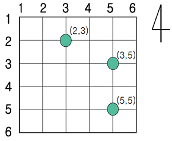

어떤 도시의 중심가는 n개의 동서방향 도로와 n개의 남북방향 도로로 구성되어 있다.
모든 도로에는 도로 번호가 있으며 동서방향 도로는 왼쪽부터 1에서 시작하여 n까지 번호가 할당되어 있다.
또한 남북방향 도로는 위부터 1에서 시작하여 아래로 n까지 번호가 할당되어 있다.
모든 도로 사이의 거리는 1 이다.
동서방향 도로와 남북방향 도로가 교차하는 교차로의 위치는 두 도로사이의 번호 쌍으로 나타낸다.
(남북방향 먼저 읽고, 동서방향 도로번호는 나중에 읽는다.)
(2,3) 으로 나타난 교차로는 위에서 2번자리, 왼쪽에서 3번 자리 위치를 의미한다.

이 도시에는 두 대의 경찰차가 있으며 두 차를 경찰차1과 경찰차2로 부른다.
처음에는 항상 경찰차1은 (1, 1)의 위치에 있고 경찰차2는 (n, n)의 위치에 있다.
경찰 본부에서는 처리할 사건이 있으면 그 사건이 발생된 위치를 두 대의 경찰차 중 하나에 알려 주고,
연락 받은 경찰차는 그 위치로 가장 빠른 길을 통해 이동하여 사건을 처리한다
(하나의 사건은 한 대의 경찰차가 처리한다.).
그리고 사건을 처리 한 경찰차는 경찰 본부로부터 다음 연락이 올 때까지 처리한 사건이 발생한 위치에서 기다린다.
경찰 본부에서는 사건이 발생한 순서대로 두 대 의 경찰차에 맡기려고 한다.
처리해야 될 사건들은 항상 교차로에서 발생하며 경찰 본부에서는 이러한 사건들을 나누어 두 대의 경찰차에 맡기되,
두 대의 경찰차들이 이동하는 거리의 합을 최소화 하도록 사건을 맡기려고 한다.
예를 들어 지도의 크기 n=6인 경우, 처리해야 하는 사건들이 3개 있고 그 사건들이 발생된 위치를 순서대로
(3, 5), (5, 5), (2, 3)이라고 하자.
(3, 5)의 사건을 경찰차2에 맡기고 (5, 5)의 사건도 경찰차2에 맡기며, (2, 3)의 사건을 경찰차1에 맡기면
두 차가 이동한 거리의 합은 4 + 2 + 3 = 9가 되고, 더 이상 줄일 수는 없다.
처리해야 할 사건들이 순서대로 주어질 때, 두 대의 경찰차가 이동하는 거리의 합을 최소화 하는 프로그램을 작성하시오.
입력 파일의 첫째 줄에는 동서방향 도로의 개수를 나타내는 정수 n(3≤n≤1,000)이 주어진다.
둘째 줄에는 처리해야 하는 사건의 개수를 나타내는 정수 w(1≤w≤15)가 주어진다.
셋째 줄부터 (w+2)번째 줄까지 사건이 발생된 위치가 한 줄에 하나씩 주어진다.
경찰차들은 이 사건들을 주어진 순서대로 처리해야 한다.
각 위치는 동서방향 도로 번호를 나타내는 정수와 남북방향 도로 번호를 나타내는 정수로 주어지며
두 정수 사이에는 빈 칸이 하나 있다. 두 사건이 발생한 위치가 같을 수 있다.
6
3
3 5
5 5
2 3
2
-------
92
INF = int(1e9)
n = int(input())
m = int(input())
acc = []
for i in range(m):
y,x = map(int,input().split())
acc.append((y,x))
po1 = [1,1]
po2 = [n,n]
def dist(a,b):
return abs(a[0]-b[0]) + abs(a[1]-b[1])
def fun(po1, po2, pick, sumd):
if pick == m:
return sumd
ret = min(fun(acc[pick], po2, pick+1, sumd+dist(po1, acc[pick])), \
fun(po1, acc[pick], pick+1, sumd+dist(po2, acc[pick])))
return ret
print(fun(po1, po2,0,0))
목록으로 돌아가기